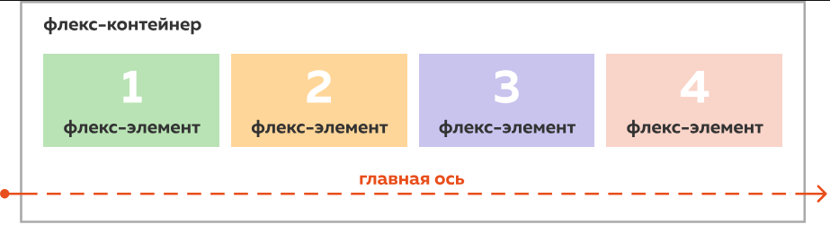
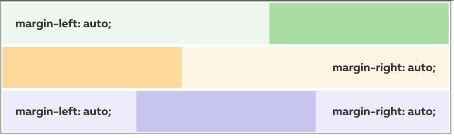
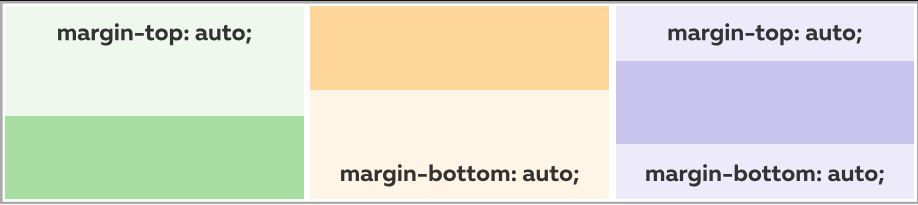

Flexbox начало
Лекция в HTMLAcademy про flexbox
Чтобы воспользоваться уникальными свойствами флексов (от английского "flexible" — «гибкий»), необходимо сначала с помощью свойства 'display' изменить тип элемента:
display: flex;Контейнер с типом 'flex' называется флекс-контейнером, а его дочерние элементы — флекс-элементами.
Флекс-элементы автоматически располагаются вдоль главной оси. По умолчанию, главная ось направлена слева направо.
По умолчанию, флекс-элементы не переносятся на новую строку и сжимаются до размера своего содержимого. Из-за этой особенности, для флекс-элементов, которые используются в сеточной структуре, рекомендуется явно задавать ширину.
По умолчанию, все флекс-элементы имеют одинаковую высоту, адаптируясь под самый высокий элемент в ряду. Самый простой способ выровнять отдельный элемент по нижней границе — это добавить ему автоматический верхний отступ. В этом случае флекс-элемент сожмется по высоте под свое содержимое и прижмется к нижней границе родительского контейнера.
Свойство justify-content
'justify-content' — это свойство флекс-контейнера, которое определяет, как расположить флекс-элементы вдоль главной оси.
Оно может принимать несколько значений:
'flex-start' — флекс-элементы располагаются в начале главной оси (по умолчанию — слева);
'flex-end' — флекс-элементы располагаются в конце главной оси (по умолчанию — справа);
'center' — флекс-элементы располагаются по центру главной оси;
'space-around' — свободное пространство равномерно распределяется вокруг флекс-элементов;
'space-between' — свободное пространство равномерно распределяется между флекс-элементами, при этом первый и последний элементы прижимаются к краям флекс-контейнера.
Свойство width
Чтобы указать ширину элемента, используют свойство width:
width: 120px;По умолчанию, свойство 'width' задает ширину содержимого элемента (content) и не включает в себя внутренние отступы и ширину рамки.
Выравнивание по центру
В веб-разработке часто возникает необходимость разместить элемент по центру, или, как это называют разработчики, отцентровать его. Для этого нужно:
- 1. Установить элементу ширину, которая меньше ширины родительского контейнера;
- 2. Задать элементу автоматические внешние отступы справа и слева.
.element {
width: 550px;
margin-right: auto;
margin-left: auto;
}Этот метод удобен, но имеет свои ограничения. Во-первых, он не работает с строчными элементами. Во-вторых, в обычном блочном контейнере (в отличие от флекс-контейнера) таким образом можно выровнять элемент только по горизонтали.
Автоматические внешние отступы
У margin может быть значение auto. Например:
margin-left: auto;Это значение указывает браузеру самостоятельно рассчитать размер внешнего отступа. Браузер выделяет под отступ все свободное пространство в родительском контейнере. Таким образом, если указать автоматический внешний отступ слева, элемент прижмется к правой границе родительского элемента.
Если автоматические внешние отступы заданы и справа, и слева, то свободное пространство разделится между ними поровну. В результате элемент будет расположен точно по центру.
В обычном блочном контейнере автоматические внешние отступы сверху и снизу работают так же, как если бы они были равны 0. Однако во флекс-контейнере они позволяют сдвинуть флекс-элемент к верхней или нижней границе. Более того, если задать одновременно верхний и нижний отступы, элемент можно отцентровать по вертикали.
Если для margin указать два значения, то первое значение будет применено к внешним отступам по вертикали, а второе — к внешним отступам по горизонтали.
margin: 0 auto;Короткую запись с двумя значениями часто применяют для центрирования элемента. Однако в других случаях лучше ей не пользоваться, так как это может ухудшить читаемость кода.